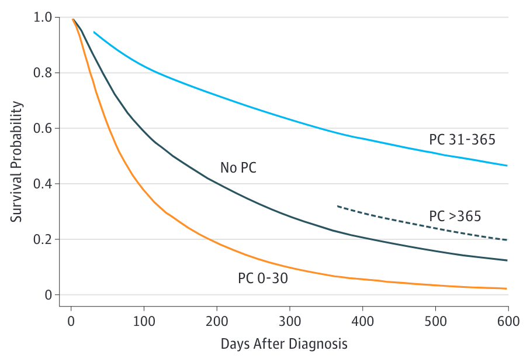

Trayectorias de la enfermedad y fases de los cuidados paliativos (RACGP 2023)
Pacientes ambulatorios con NSCLC metastásico recién diagnosticado
La integración temprana redujo significativamente (casi un 50%) las tasas de depresión (Temel et al. 2010)
Una mejora del TOI (Trial Outcome Index) de 5 puntos es similar a la de pacientes que respondieron a quimioterapia basada en cisplatino (Temel et al. 2010)
599 pacientes con NSCLC fueron asignados aleatoriamente para recibir
cisplatino más etopósido
cisplatino más paclitaxel a dosis estándar
cisplatino más paclitaxel a dosis más altas con (g-csf)
(remisiones completas + parciales)
Cis/Eto 12,4%
Cis/Pacli 25,3%
Cis/Pacli (dosis alta) 27,7%
Relative toxic effects (CTC), by age reported in the Eastern Cooperative Oncology Group 5592. (Langer et al. 2002)
“Las intervenciones que se centran en la comunicación sobre cuidados paliativos y al final de la vida, utilizando especialistas en cuidados paliativos, han demostrado una mejora de la calidad de vida, una disminución de los síntomas de depresión …” (Curtis et al. 2013)
La integración temprana de los cuidados paliativos prolongó la supervivencia unos 2 meses (Temel et al. 2010)

“Las intervenciones que se centran en la comunicación sobre cuidados paliativos y al final de la vida, utilizando especialistas en cuidados paliativos, han demostrado una mejora de la calidad de vida, una disminución de los síntomas de depresión…
y una reducción de la intensidad del tratamiento al final de la vida.” (Curtis et al. 2013)
Ya no podemos hacer nada
Vamos a enfocar todos los tratamientos disponibles en mejorar la calidad de vida.
Aumentar las probabilidades de prolongar la vida.
se prestó especial atención a:
Un estudio cualitativo
“Los médicos de cuidados paliativos se centraron en establecer relaciones con los pacientes y determinar sus necesidades y preferencias individuales de información en una fase temprana de la enfermedad.”(Yoong et al. 2013)
Clarificación de los objetivos del tratamiento
Dar malas noticias
Comunicar el pronóstico
Planificación de cuidados avanzados
Hablar de la muerte
Translado a una unidad de cuidados paliativos
Los pacientes que recibieron intervenciones médicas agresivas tuvieron peor calidad de vida en la última semana de vida
Lo contrario ocurrió con los cuidados paliativos (hospicio), en los que la calidad de vida de los pacientes mejoró cuanto más tiempo estuvieron ingresados.
Los familiares de pacientes que recibieron algún tipo de atención agresiva tenían mayor riesgo de desarrollar
(Curtis et al. 2013) realizaron un estudio sobre una intervención basada en un taller presencial diseñado para mejorar las habilidades de comunicación de residentes de oncología. La intervención consistió en ocho sesiones de 4 horas dirigidas por un médico y una enfermera.
Se trató de un estudio negativo (sin cambios significativos) sobre el efecto en los resultados notificados por pacientes, familiares y médicos.
efectos positivos 95.6%
al menos un efecto secundario (negativo) 52.6%
“En general, la literatura no respalda la creencia generalizada de que la comunicación sobre los objetivos de los cuidados y las cuestiones relacionadas con el final de la vida aumente la ansiedad, la depresión y/o la desesperanza de los pacientes.”(Bernacki and Block 2014)
Un equipo especializado en cuidados paliativos debe estar formado por miembros de al menos tres grupos profesionales
De ellos, al menos el médico y la enfermera deben estar certificados en cuidados paliativos.
perder a un ser querido por la muerte (o morir) es una parte inherente de la vida humana y sólo alrededor del 7% de los adultos mayores en duelo desarrollarán un duelo complicado. (Shear, Ghesquiere, and Glickman 2013)
Universales
Seleccionadas
Indicadas
Los canadienses y la planificación anticipada de la atención médica. Tendencias actuales (The Advance Care Planning in Canada initiative 2021)
S: setting
P: perception
I: invitation
K: knowledge
E: empathy
S: strategy
Pon en práctica el axioma: “antes de decirlo, pregúntalo”.
Sólo el 25% de los pronósticos fueron exactos (con 1 mes de margen). Dos tercios estaban sobreestimados, sobre todo en los pacientes con menor supervivencia. 1
El error de pronóstico está ampliamente propagado, sólo alrededor del 20% de las estimaciones son precisas 2
Sólo el 20% de las predicciones fueron precisas dentro del 33% de la supervivencia real 3
Quien?
Que?
Cuando?
Como?